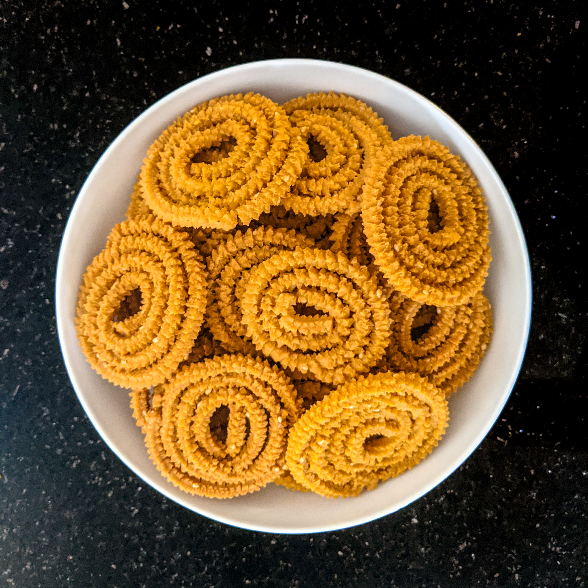

Ingredients

- 2 cups rice flour
- 1 cup wheat atta (flour)
- 1 cup maida (all-purpose flour)
- Salt
- Chili ginger paste
- Sesame seeds
- 1 stick butter
Instructions
- Melt butter and mix all together.
- Make medium dough (not too hard).
- First make chakri on foil then fry in medium hot oil.